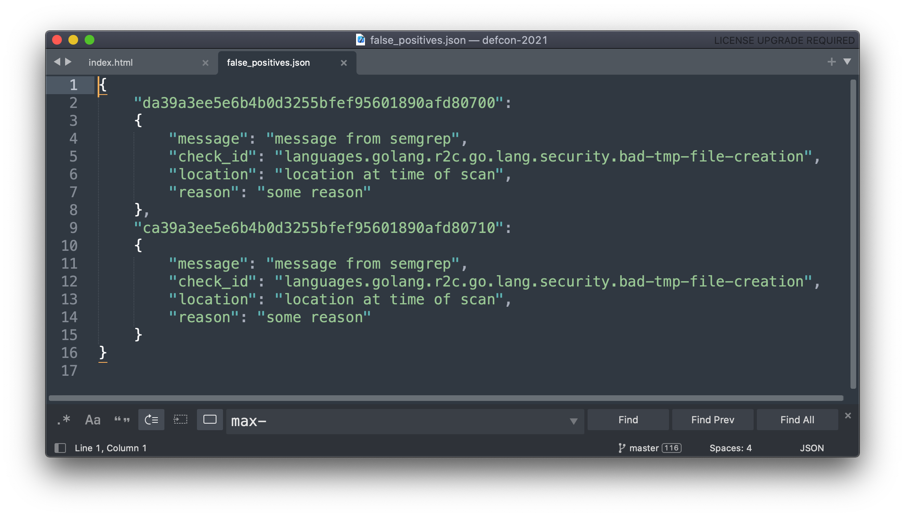

$whoami
Erin Browning
Senior Security Engineer
@Slack

Staff Security Engineer @Slack
Slack is hiring!
Slack is used by millions of people every day – we need engineers who want to make that experience as secure and enjoyable as possible.
program for 1200 devs
across multiple languages for lots of different compliance standards.
1. A generic engine
2. Ability to tune and define the ruleset
3. Ability to build and control our own infra
It can injest a language's abstract syntax tree and a ruleset to analyse codebases.
write your own
The rules are yaml files; they're easy to write or modify
We have a generic engine. How can we use it to easily scale up our static analysis program?
We chose to use a JSON file for super easy maintenance

- file path
- three lines of code before, one line after
- the triggered rule name
We don't use the line number--it's too fragile!
Security can review their request
def compare_to_last_run(old_output, new_output, output_filename):
"""
This compares two scan runs to each other.
It only keeps findings that are exclusively in the new run.
"""
old = open_json(old_output)
new = open_json(new_output)
old_hashes = get_hash_ids(old)
new_hashes = get_hash_ids(new)
for new_issue_hash in new_hashes:
if new_issue_hash in old_hashes:
new["results"].remove(new_hashes[new_issue_hash])
write_json(output_filename, new)
return new
We currently perform:
- A daily comparison
- A branch comparison
Or two interns
Who are almost done with computer science degrees
David Frankel
Nicholas Lin
Project SUSHI
Static analysis Using Semgrep (with) Hack Integration

Github's tree-sitter
1. Enabled file
2. Empty json for false positives
3. Review the results
4. Bam! You're scanning that codebase
5. You are now in...
The SNOW team
R2C
Our wonderful summer interns, Nicholas and David
Slack
The AppSec Village
Antonio de Jesus Ochoa Solano
Ryan Slama